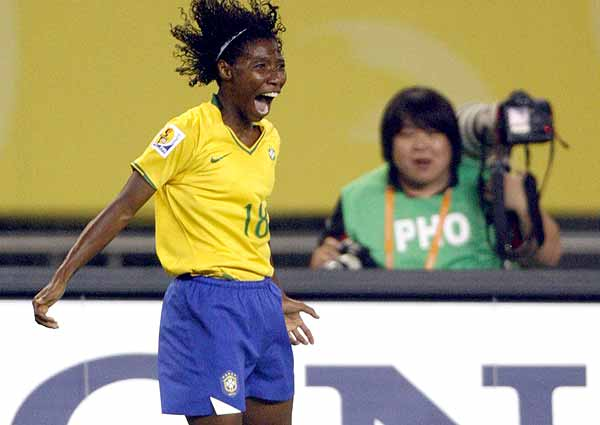
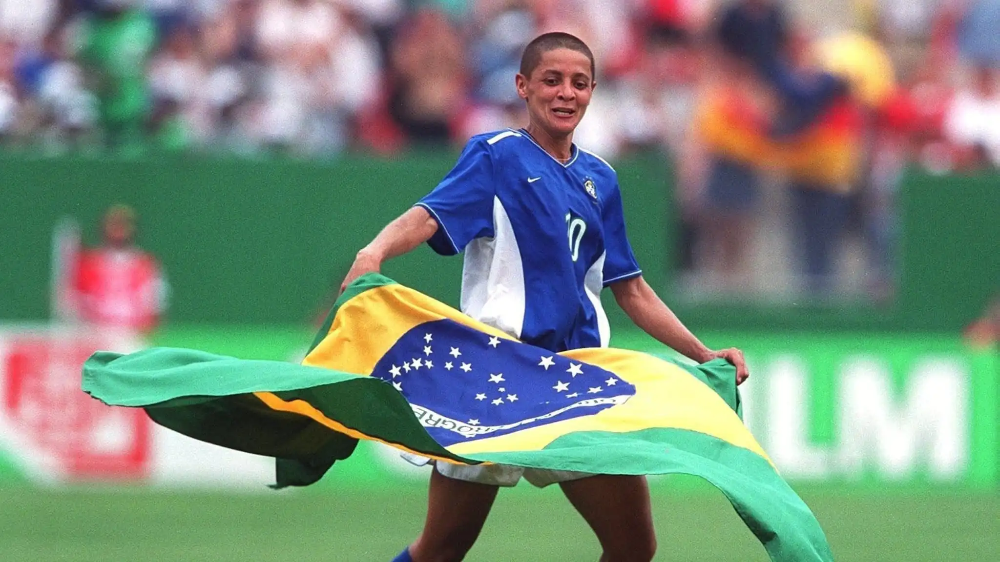
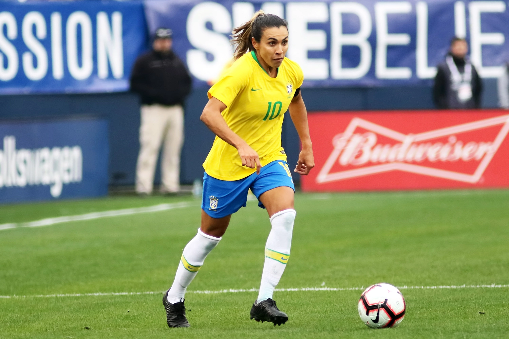

Delma Gonçalves (Pretinha)
A ex-jogadora faz parte de uma geração responsável por fazer meninas acreditarem na possibilidade do crescimento do futebol feminino no país. Pretinha começou a jogar futebol aos sete anos, no bairro do Realengo, subúrbio do Rio de Janeiro. Em 1991, aos 16 anos, a atacante foi convocada para a seleção brasileira adulta e participou da 1° Copa do Mundo de Futebol Feminino. Naquele momento, disputar um mundial de futebol só com mulheres representava o início de uma jornada para toda uma geração que cresceu sonhando com a visibilidade da modalidade. Em síntese, com a camisa do Brasil, a meia escreveu sua história. Dessa forma, ela disputou cinco Copas do Mundo e esteve presente em quarto Olimpíadas. Pretinha tem duas medalhas de prata no currículo. Apesar da baixa estatura, a jogadora sempre teve no cabeceio uma das principais qualidades.
Sissi
Sisleide do Amor Lima nasceu em Esplanada, na Bahia. É reconhecida como uma das principais jogadoras da história do Brasil, mas demorou um pouco a receber esse reconhecimento. Sissi, como era conhecida, também viveu em uma época que o futebol feminino sofria para conseguir espaço por aqui. Sissi nasceu em um ambiente onde "futebol era coisa de homem". Até em casa ouvia isso. Tanto do pai quanto do irmão. Mas a menina deu seu jeito: pegou as cabeças das bonecas para usar de "bola improvisada". O futebol estava na alma. Sissi já era jogadora de seleção desde o fim da década de 1980, porém "esourou" mesmo em 1999. O Brasil fez grande campanha na Copa do Mundo disputada nos Estados Unidos. Ela marcou nos quatro primeiros jogos, com destaque para três gols na estreia, um 7 a 1 contra o México, os dois gols decisivos contra a Itália e um no empate em 3 a 3 contra a Alemanha, um jogaço. O gol da vitória sobre a Nigéria nas quartas, marcado por Sissi, é lembrado até hoje como um dos mais bonitos da história dos Mundiais.
Prazer, Marta
Seis vezes eleita a melhor jogadora do mundo - feito único na premiação da FIFA -, a alagoana Marta Vieira da Silva é o maior fenômeno do futebol feminino do século XXI. Desde 2015 é a maior artilheira da história da Seleção Brasileira, contando a Masculina e a Feminina, com 116 gols. A atacante integra a Seleção Brasileira desde 2003 e foi uma das principais contribuintes para a medalha de ouro nos Jogos Pan Americanos de 2003 e 2007, e de prata nos Jogos Olímpicos de Atenas (2004), Pequim (2008) e vice-campeã na Copa do Mundo da China em 2007, em que foi eleita a melhor jogadora da competição. Além de brilhantes passagens por clubes nacionais, estadunidenses e suecos, Marta é uma personalidade de influência mundial, inclusive embaixadora da ONU em causas humanitárias.